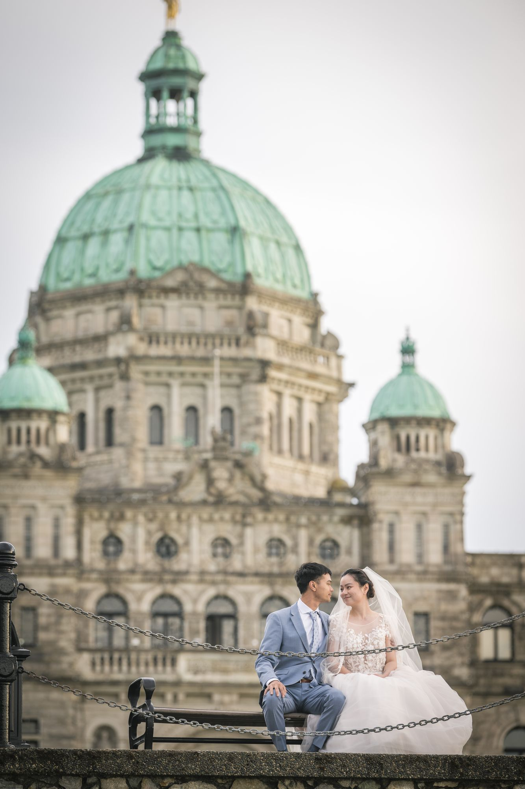
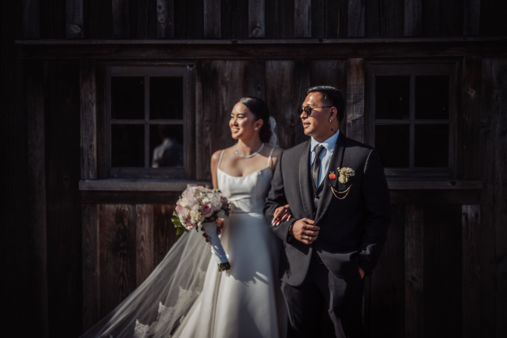

Vancouver Island is home to some of the most varied and stunning wedding venues in Canada — and Victoria sits at the heart of it all. Whether you're dreaming of a dramatic coastal ceremony or an intimate garden affair, these venues represent the very best the city has to offer.

1. The Union Club of British Columbia
One of Victoria's most prestigious private clubs, the Union Club offers Old World elegance with sweeping harbour views. The library, ballroom, and terrace create multiple distinct spaces within a single historic building. For couples who want a classic, refined aesthetic with zero compromise on location, this is Victoria's best-kept secret.


2. Hatley Castle & Gardens
Hatley Castle is straight out of a fairy tale. The imposing castle facade, formal Italian gardens, and Japanese garden create endless photographic possibilities without ever leaving the property. Royal Roads University owns the grounds now, but the castle and gardens are available for exclusive events. The dramatic architecture photographs beautifully in any light.

3. The Victoria Art Gallery
For couples who want art and romance in equal measure, the Art Gallery of Victoria offers soaring ceilings, natural light, and curated exhibitions as your backdrop. The marble courtyard is particularly stunning for ceremonies. It's a city-owned venue, so dates book up quickly — but the space is genuinely incomparable.
4. Brentwood Bay Lodge & Spa
On the Saanich Peninsula, Brentwood Bay Lodge offers waterfront elegance with a distinctly West Coast feel. The marina, winery-accessible location, and luxury accommodations make it ideal for multi-day celebrations. The outdoor terrace overlooking the bay is one of the most photographed ceremony spots on the island.

5. St. Ann's Peninsula Gardens
If a garden wedding is your dream, St. Ann's is difficult to beat. Acres of manicured gardens, a reflecting pond, and a heritage manor house create an extraordinarily romantic setting. The venue operates seasonally (May through October) and books 12–18 months in advance for peak summer dates.


6. The Poets Cove Resort
On Pender Island, Poets Cove is the definition of destination wedding done right. With an infinity lawn overlooking the harbour, elegant cottages, and a dedicated wedding team, couples can host their entire celebration on a single stunning property. The light on the water at golden hour is absolutely magical.

7. Christ Church Cathedral
For couples seeking a traditional church ceremony in an architecturally significant space, Christ Church Cathedral downtown delivers. The Gothic Revival architecture, stained glass windows, and pipe organ create a ceremony experience that's profoundly moving. Ceremony-only bookings are available for non-parishioners.


8. Malahat Skywalk
The newest venue on this list and already one of the most sought-after. Perched at the Malahat summit, the new event space offers 360-degree views of the Salish Sea, Saanich Inlet, and the Olympic Mountains. The architectural structure itself — all steel and Douglas fir — is stunning. Best for smaller, design-forward celebrations.
9. The Butchart Gardens
No list of Victoria venues would be complete without The Butchart Gardens. While the Evening Illumination events are famous, daytime and dawn access for photography sessions is also available to couples who book the venue for their reception. The Sunken Garden, Rose Garden, and Japanese Garden offer extraordinary variety in a single location.

10. Villa Eyrie Resort
Perched high in the Saanich hills, Villa Eyrie offers panoramic views from the Gulf Islands to the Olympic Mountains. The Italian-inspired architecture, olive groves, and vineyard feel make it uniquely European in character. The property is relatively new as an event venue, which means many 2027 and 2028 dates are still available — a rarity in Victoria.

Every venue tells a different story. My job as your photographer is to understand which story you want to tell — and to capture it with the honesty and emotion it deserves. If you're planning a Victoria wedding and want to talk through venue options, I'd love to hear from you.